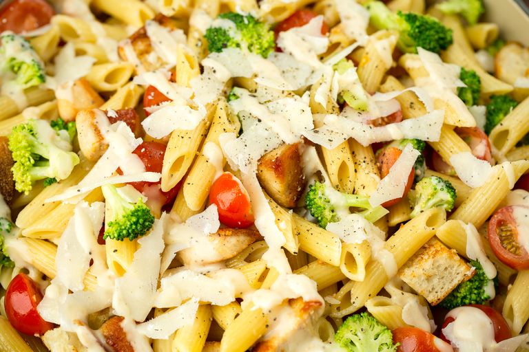

Chicken Caesar Pasta Salad

Description
This is the perfect side for your next BBQ
Ingredients
FOR THE PASTA SALAD
- 1 lb. penne
- 1 tbsp. extra-virgin olive oil
- 2 boneless skinless chicken breasts
- 1 tsp. Italian seasoning
- 1 tsp. garlic powder
- Kosher salt
- 2 c. chopped romaine lettuce
- 1 c. halved grape tomatoes
- 1/2 c. freshly grated Parmesan
- 1/2 c. croutons
- 2/3 c. Caesar dressing
- Juice of 1/2 lemon
- 1 tbsp. freshly chopped parsley
- Freshly ground black pepper
Directions
- In a large pot of salted boiling water,
cook penne according to package directions until al dente.
Drain and transfer to large bowl.
- Meanwhile, in a large skillet over medium heat, heat oil.
Season chicken with Italian seasoning, garlic powder,
and salt. Cook until golden and cooked through, 8 minutes
per side. Let rest 10 minutes, then cut into 1" pieces.
- Add romaine, tomatoes, Parmesan, croutons, and chicken to pasta bowl.
- In a medium bowl, whisk together Caesar dressing,
lemon juice, and parsley and season with salt and pepper.
Pour over penne mixture and toss to combine.
Home